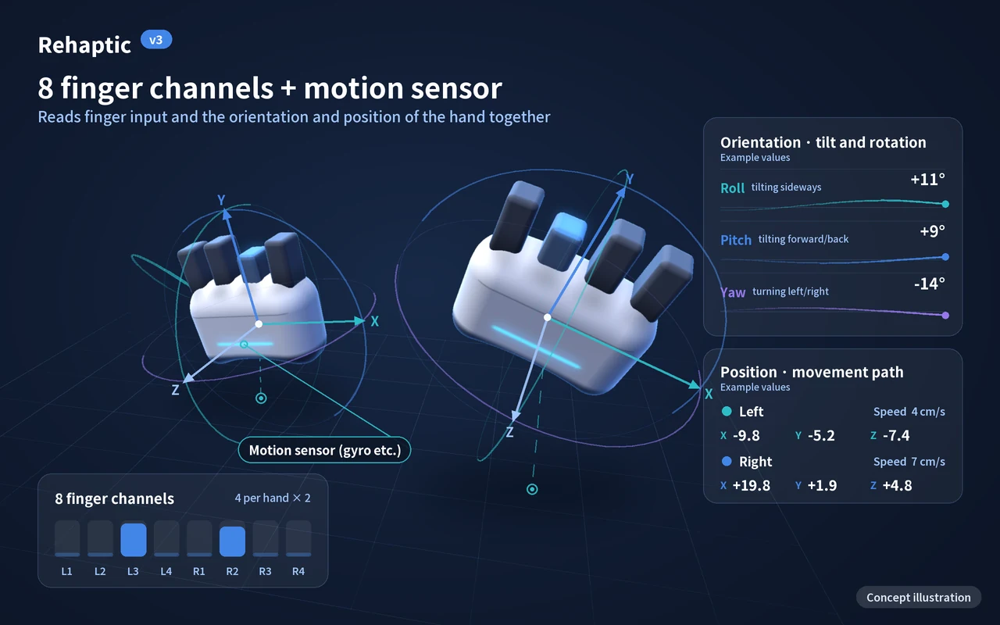
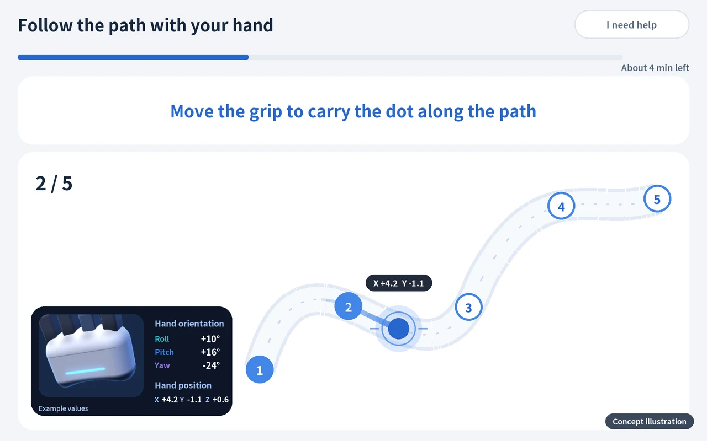
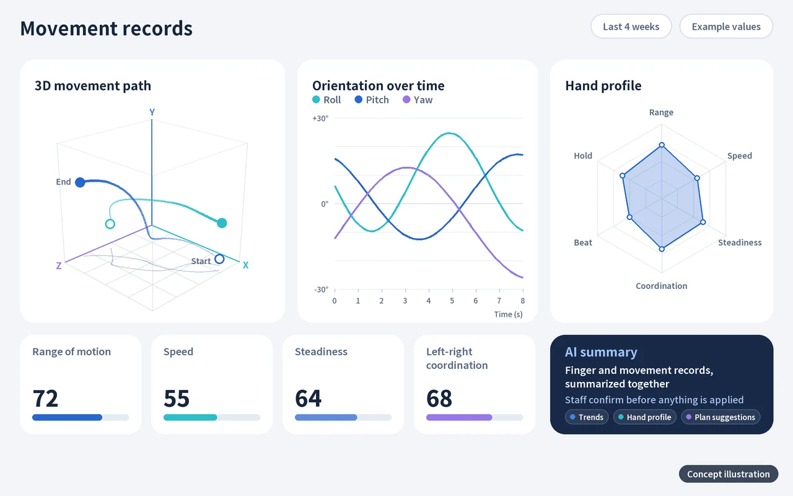
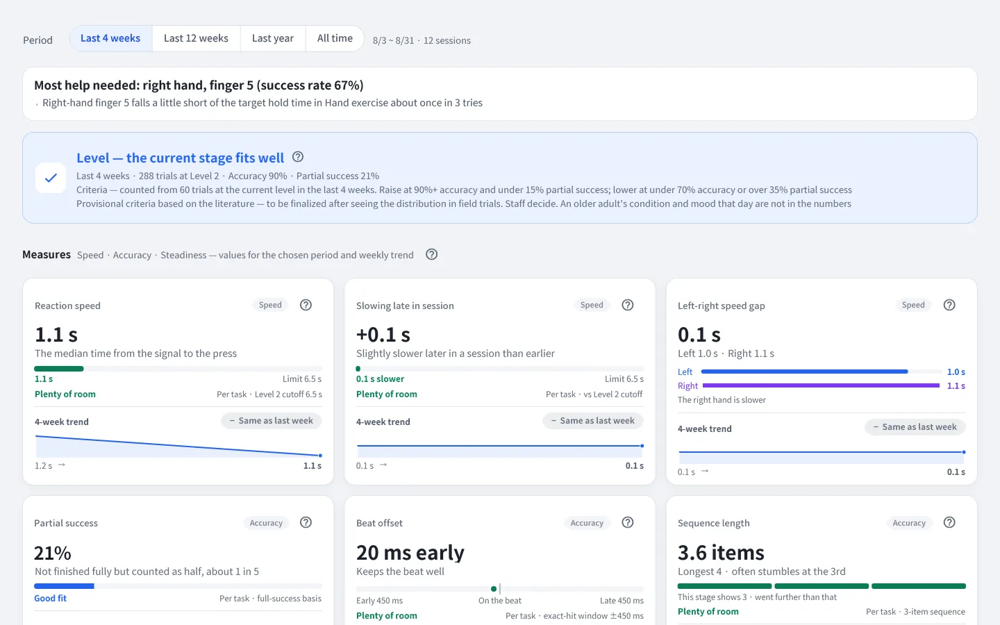

Technology
Measuring each finger,
leaving a record
Rehaptic automatically records how training was done, based on finger-by-finger input and seven areas of measurement. As records build up, it suggests levels, and people decide. The next generation reads hand movement with a motion sensor and leads on to AI analysis.
Planned for launch
- 8Independent levers
4 per hand × 2 - 0.1 sInterval of lever-position
signals for each finger - 7Measurement areas
by finger - 3Domestic patent
applications (not yet granted)
Platform
From input to AI analysis, one platform
It reads finger input, guides the activities, records values and analyzes the data. Dashed items are planned for the next generation (v3).
Current setup Next generation (v3), planned
What makes it different
Finger-by-finger input and vibration
Four independent levers per hand are pressed on their own, and vibration, the screen and sound together tell you which finger. The structure of independent input and vibration is the subject of three domestic patent applications (pending, not yet granted).
Seven measurements by finger
Reaction, separation, control, sustain, beat, sequence and coordination are recorded automatically as per-finger values. For each trial, the reaction time, result, press depth and fingers pressed instead are saved.
Records built for how organizations work
Participants are registered by ID number instead of name, and records gather in the admin web without staff writing them down. Levels are only suggested; staff confirm and apply them.
From the grip to the admin web, in one line
Four stages that finger movement passes through until it becomes a record.
-
Haptic grips
A left and right pair. Each finger has its own lever for input, and vibration tells you which finger.
8 levers · signal about every 0.1 s -
Bluetooth
Tablet app
Guides training on an Android tablet and records each trial. If the internet drops, it keeps the records and sends them once reconnected.
Sound · large text · practice first -
Internet
Record server
Stores trials by ID number, totals them by session and week, and calculates level suggestions.
ID numbers, not names -
Web browser
Admin web
Shows center status and each participant's records, provides PDF reports and CSV, applies level suggestions and manages accounts.
Staff apply suggestions
Next generation · v3
From fingers to the movement of the hand
The next-generation grip (v3) carries a motion sensor (such as a gyro) and reads the orientation (tilt and rotation), position and movement path of the hand together with finger input. It leads to new contents and AI analysis.
A sensor that reads orientation and position
A motion sensor inside the grip reads the tilt and rotation of the hand, and where it moved from and to (position and path).
Hand-movement contents
We are building new contents in which you move your hand while holding the grip. Finger input and hand movement are used together.
AI analysis of measured data
Finger records and movement records are gathered together to summarize trends and suggest plans. Staff confirm before applying.

Grip + motion sensor

Hand-movement contents

Movement records and AI summary
The next generation (v3) is a development plan, and its items and schedule may change. Measured values are records of how training was done, not a diagnosis or a judgment of effect. The pictures and video above are concept illustrations, not actual product or app screens.
Seven areas measured by finger
Each area, the value used to measure it and the contents that cover it. Area names are internal design names; app screens show only content names.
| Area | What it measures | Measurement | Contents |
|---|---|---|---|
| Reaction | Time taken to press after seeing a signal | Reaction time (ms, median) | Measured through the reaction time in Hand exercise and Follow the Numbers |
| Separation | Moving only the target finger | Number and kind of fingers pressed instead | Hand exercise · One finger at a time |
| Control | Pressing the lever to the depth you want | Press depth (%, lever travel) | Depth matching |
| Sustain | Keeping a press for a set time | Hold rate (%) | Hand exercise · Depth matching |
| Beat | Pressing on time with the rhythm | Rhythm accuracy, time following the beat | Rhythm play · Follow the beat |
| Sequence | Remembering a shown order and pressing in the same order | Sequence recall accuracy | Follow the Numbers |
| Coordination | Using both hands together | Left-right balance (%) | Two-handed Hand exercise and Rhythm play |
Each content looks at different areas
One content covers several areas together, and each area is carried by several contents.
| Area | Hand exercise | Rhythm play | Follow the Numbers | One finger at a time | Depth matching | Follow the beat |
|---|---|---|---|---|---|---|
| Reaction | Also covered | Not covered | Also covered | Not covered | Not covered | Not covered |
| Separation | Main area | Not covered | Also covered | Main area | Not covered | Not covered |
| Control | Not covered | Not covered | Not covered | Also covered | Main area | Not covered |
| Sustain | Main area | Also covered | Not covered | Not covered | Also covered | Not covered |
| Beat | Not covered | Main area | Not covered | Not covered | Not covered | Main area |
| Sequence | Not covered | Not covered | Main area | Not covered | Not covered | Not covered |
| Coordination | Also covered | Also covered | Not covered | Not covered | Not covered | Not covered |
Main area Also covered (Reaction is measured through the reaction time in Hand exercise and Follow the Numbers)
Mole catching looks at reaction and separation, and Fist Dodge at coordination and sustain. The reaction time in Mole catching is not added to the reaction values of other contents. The table above follows the area table of our business plan; the two contents are listed separately.
Training contents and the level structure
Each content has a level ladder, and a level is set by its shape (stage and step) and its speed.
| Content | How it works | Main areas | Level steps |
|---|---|---|---|
| Hand exercise | Press the finger of the lit number and keep holding for a set time. Five formats (one hand at a time, both hands, two on one hand, different on each hand, two on each hand) run in a loop. | Sustain · Separation (Coordination) | 13 steps |
| Rhythm play | Press falling circles with the right finger in time with the background music. One song is one round. | Beat (Coordination · Sustain) | 19 steps |
| Follow the Numbers | Watch numbers one at a time, remember them and press them in the same order. Five rounds make one block. | Sequence (Separation) | 8 steps |
| Mole catching | A reaction game in which you press the lit finger to catch the mole that pops up. Each round goes explanation, practice, then the main round. | Reaction · Separation | 7 steps |
| Fist Dodge | Squeeze the whole left hand to go left and the whole right hand to go right, one lane at a time, dodging the dark clouds that come down. You open and squeeze again to move again, and both hands are needed. | Coordination · Sustain | 10 steps |
| One finger at a time | Raise only the target bar out of four and keep the others still. | Separation (Control) | — |
| Depth matching | Match the height of the band on the screen bar and stay at the set depth. | Control (Sustain) | — |
| Follow the beat | An activity that goes deeper into the beat. | Beat | — |
| Seasonal and regional theme packs | Content bundles themed on seasons and regions. They follow the areas of the contents they hold. | Sustain · Separation · Coordination · Beat · Sequence | — |
Level steps are the number of steps on the level ladder; "—" marks items still being organized.
From measurement to record
The order in which a grip signal becomes a per-finger record and a level suggestion.
Grip signal
The lever position is sent for each finger about every 0.1 seconds.
Calibration
Using the "released to fully pressed" length that staff calibrated, it is read as press depth (%).
Trial record
For each trial, the per-finger reaction time, result, press depth and fingers pressed instead are saved automatically.
Totals
Records are gathered by session and week and shown in the admin web, PDF reports and CSV.
Suggestion
Levels are suggested from the records, and staff confirm before applying.
Values saved for one trial Example values
Hand exercise · left hand, finger 2
- Result
- Success
- Reaction time
- 620 ms
- Press depth
- 78 %
- Pressed instead
- None
The vertical mark is the press depth that counts (65% by default; staff choose 50, 65 or 80%). The values above are fictional examples for explanation.
How one trial is judged Accuracy calculation
Based on trials attempted
- Success
- 1.0 point
- Partial success
- 0.5 point
- Failure
- 0 points
- Timeout
- Left out of the denominator and counted separately
If no trial was attempted, accuracy is "no value", not 0.
How the values are calculated
The formulas the code calculates, written out as they are.
- Accuracy
- Sum of (success 1 · partial success 0.5 · failure 0) ÷ trials attempted × 100. Timeouts are left out of the denominator and counted separately.
- Reaction time
- The median reaction time (ms) of trials, excluding timeouts and Rhythm play. Rhythm play is measured separately with the beat measures.
- Left-right balance
- For each hand, the average of (success 1 · partial 0.5 · other 0); the lower side ÷ the higher side × 100. Counted only for sessions done with both hands.
- Hold rate
- In Hand exercise, the sum of time actually held (counted only up to the target time) ÷ the sum of target times × 100.
- Rhythm accuracy
- (exact + good × 0.5) ÷ rhythm trials × 100. A missed note is recorded as a failure.
- Press depth
- How many % of the calibrated length the target finger's lever went at its deepest during a trial (0 to 100). It is the distance the lever moved, not force, and is compared only with the same user's other times.
- Pressed instead
- How many times another finger was pressed instead of (or together with) the finger that should be pressed, and which fingers. A press counts only when it is complete, and a finger that is newly pressed is counted once.
Press depth and fingers pressed instead are recorded values and do not enter the formulas for accuracy or level suggestions. The definitions are drafts under development and may change.
Levels are suggested, and people decide
It does not look at accuracy alone; it also looks at timeouts caused by not pressing.
Trials that are counted
Only trials at the current level in the last 28 days, and only after the level was last changed.
Timeouts are weighed too
If the timeout share is 20% or more, the level is not raised even when accuracy is high, and "Continue" is shown with the reason. At 50% or more, "Please check the position and the device once" is added. This keeps timeouts caused by not pressing from being read as "too hard" and lowering the level.
No immediate reversal
After a level change, it is not suggested again until two sessions have passed.
The app never changes it secretly
Staff decide in the admin web with [Apply], [Later] or [Ignore]. Applying, ignoring and changing, with the reasons, are kept in the history.
The threshold values are provisional criteria based on the literature and will be finalized after seeing the distribution in field trials.
AI personalization that adapts as records build up
We are preparing AI personalization, which suggests a different training plan for each person from their per-finger performance records.
8 fingers × 7 measurement areas: the grid of records that builds up with every trial (a concept diagram, not real values)
Record
Per-finger values build up automatically with every trial.
Hand profile
From the accumulated records, we summarize each person's tendencies: what suits them well and what deserves a closer look.
Plan suggestion
We find the starting point for each content with a standard set and suggest a session plan that reflects weaker areas.
Staff confirmation
People decide whether to apply a suggestion. The app never changes things secretly.
Training and new records
People train with the applied plan, and new records build up and lead to the next suggestion.
What AI does
- Summarizes tendencies in accumulated records
- Finds areas that deserve a closer look
- Suggests a session plan
What people do
- Confirm and apply suggestions
- Run the program and look after older adults
- Medical judgments are made by the treating medical professional
AI personalization is a plan that comes after data accumulation, legal review and cooperation with medical professionals, and its timing has not been set. It only suggests a training plan and is not a diagnosis or a judgment about treatment.
Shown at the level of each finger
Instead of scores or rankings, the admin web's analysis screen shows the value for each measure with the trend of the last 4 weeks, level cards and the reasons behind them. It even points to the finger number where help is most needed.
- RecordsPerformance records and reports by finger
- SuggestLevel and speed suggestions based on performance records
- PlanPersonalized training suggestions as records build up (AI personalization)

The admin web currently has a Korean interface only, so this screen is an English rendering of the actual screen of a development environment, using only ID numbers and fictional data. Product specifications, screens and available languages may change.
Related patents
We have filed 3 domestic patent applications on independent finger input and vibration and on how training is organized (pending, not yet granted).
| Title of application (English translation) | What it covers |
|---|---|
| Cognitive-motor combined exercise device using grip-strength enhancement and rhythmic vibration stimulation | An exercise device combining grip strength and rhythmic vibration stimulation |
| Multisensory finger-independence training system based on haptic rhythm, and cognitive-motor function rehabilitation method using the same | A multisensory finger-independence training system |
| Multi-stage integrated cognitive-motor training system and method based on hold-duration judgment using left-right independently paired haptic devices | Independent left-right pairing and hold-duration judgment |
Titles are English translations of the titles as filed in Korean, and do not state any efficacy or medical purpose of the product. Drawings and claims are not yet public and are not shown.
Performance record noticeThese values are records of how training was done. They are not a diagnosis of cognitive function or any condition, and they do not judge any effect. Medical judgment belongs to the treating medical professional. Rehaptic is not a medical device.
Questions about the technology or adoption?
Feel free to ask about how we measure, the package, center adoption and partnerships.